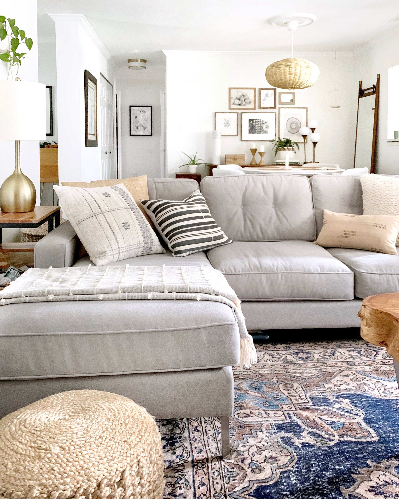

One of the key features of ash wood is its attractive grain pattern. It typically has a straight, even grain with a coarse texture, which adds visual interest to furniture pieces. The color of ash wood can vary, ranging from pale yellow to light brown. This natural variation in color allows for a wide range of finishes, from light and natural to darker stains.
In addition to its aesthetic appeal, ash wood is highly regarded for its strength and durability. It is known for its excellent shock resistance, making it a suitable choice for furniture that needs to withstand regular use and potential impacts. Ash wood is also relatively lightweight, making it easier to move and handle compared to heavier hardwoods.
Another advantage of ash wood is its workability. It is relatively easy to cut, shape, and join, making it a preferred choice for furniture makers. Ash wood can be carved, turned, and bent to create intricate designs and details. It also takes stains and finishes well, allowing for customization to match various interior styles.
OAKwood furniture is not only visually appealing and durable but also sustainable. Ash trees are fast-growing and abundant, making them a renewable resource. Choosing furniture made from OAKwood supports responsible forestry practices and helps reduce the environmental impact.
Whether it's a sleek modern design or a classic traditional piece, ash wood furniture offers a timeless and elegant look that can complement a variety of interior styles. Its strength, durability, and versatility make it a reliable choice for both residential and commercial settings.
Overall, OAKwood furniture combines aesthetic appeal, durability, and sustainability, making it a popular choice for those seeking high-quality and long-lasting furniture pieces.